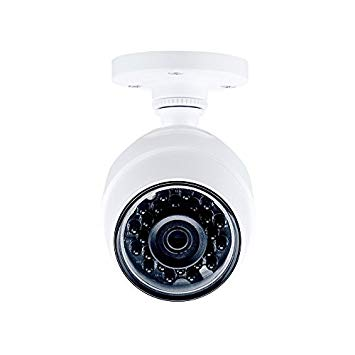
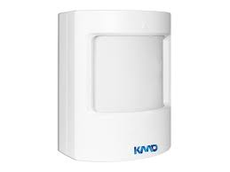

Um dos primeiros recursos que nos vêm à mente quando nós falamos em segurança patrimonial, as câmeras de monitoramento são praticamente indispensáveis para a proteção de qualquer tipo de negócio. São utilizadas como forma de observar, registrar e comunicar a ocorrência de atividades suspeitas ou atípicas nas diversas instalações da empresa.
O sistema de alarme é composto por sistemas de sensores espalhados estrategicamente pela residência para possibilitar a detecção de pessoas circulando em um determinado ambiente ou identificando abertura de portas e janelas.Os sensores ativos utilizam um sistema com infravermelho para criar uma espécie de cerca protegendo a casa.
 class="grid">
class="grid">
Um sensor de movimento é uma definição genérica e pode-se aplicar a muitos sistemas diferentes de detecção. São muito utilizados em sistemas de alarmes e em minuteria, sensor que liga uma lâmpada ao detectar movimento.
